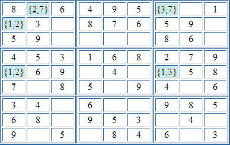

Sudoku Solving Techniques - Forcing ChainsForcing chains is a technique that allows you to deduce with certainty the content of a cell from considering the implications resulting from the placement of each of another cell's candidates. (This technique is also know as "double-implication chains".) For example, in the following puzzle:  (The numbers is curly brackets { } are the candidates for the cell.) Consider r1c2. This has the two candidates, 2 and 7. We will consider the implications of each of these candidates in turn. if r1c2 = 2, then r2c1 = 1, and r5c1 = 2 if r1c2 = 7, then r1c7 = 3, and r5c7 = 1, and r5c1 = 2 So whichever of the two possible values are placed into (1, 2), we've deduced that (5, 1) must hold a 2. In other words, whichever chain of cells we follow, a certain cell is forced to have a specific value. Note: unless the puzzle has multiple solutions, one of the considered candidates must be incorrect. This means it must eventually lead to either a contradiction or a dead end. If, when considering a single candidate, you reach a dead end, or find two chains that lead to different conclusions, you can eliminate that candidate from the starting cell. This is verging onto trial-and-error, and SadMan Software Sudoku doesn't do this as part of the forcing chain strategy. However, it can be useful when solving manually Back to Sudoku Solving Techniques
|